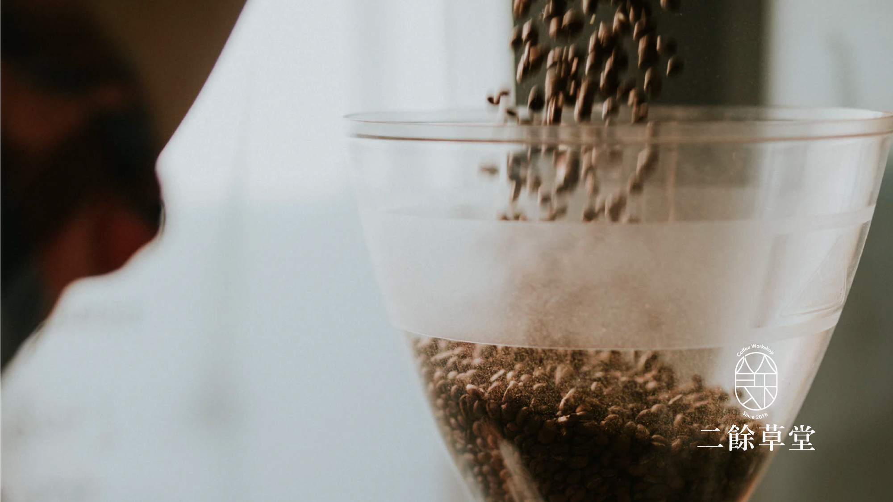

Yung Chia Tai
About
Works
二餘草堂 Coffee Workshop Branding
2019
來自山裡的咖啡烘豆工作室
農餘之際煮茗滌煩，工作之時揮毫弄墨
二餘之時，來杯咖啡
故名
二餘草堂咖啡
Concept
二餘咖啡意為 “農餘之際，工作之餘” 標誌則以餘字作為標誌的延伸。

二餘草堂咖啡工作室
住址 - 423台中市東勢區新盛六街113號
電話 - +886 972 052 849
Top